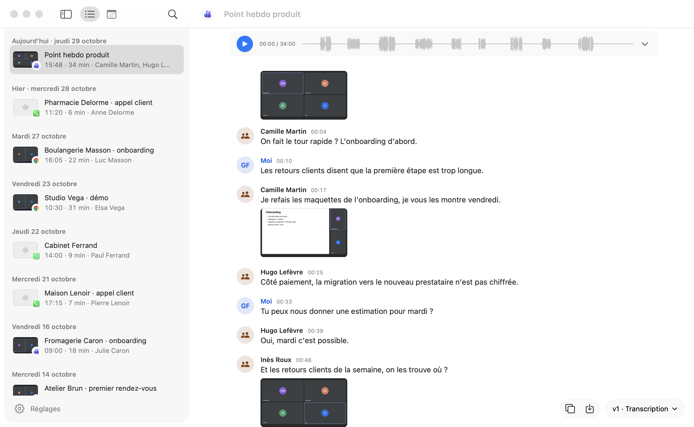
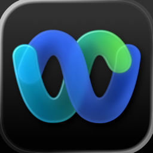
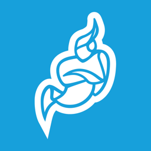
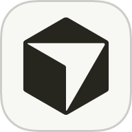
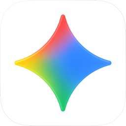
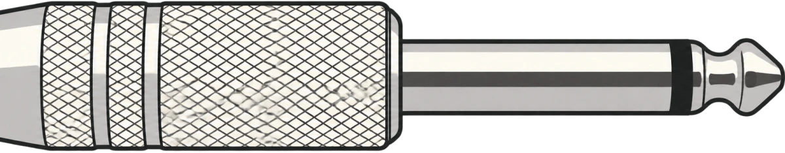
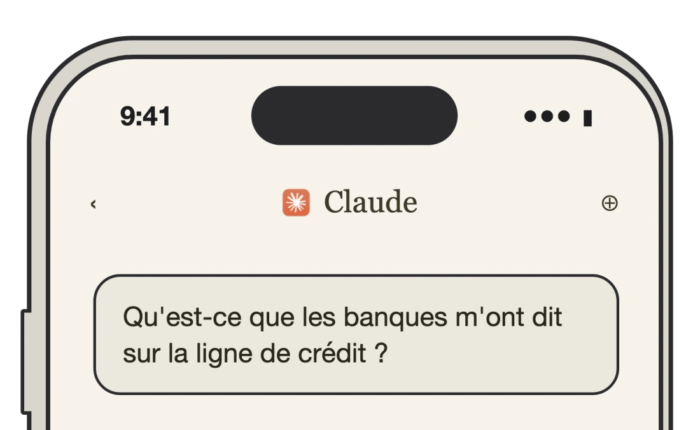
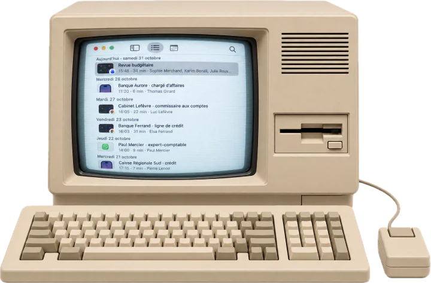

Enregistrez-vous sans y penser
Transcrivez tout sur votre Mac, prêt pour votre assistant IA.
Installer CallRecordermacOS 15 ou plus récent · Mac M1 ou plus récent

 5 appels lus : la revue budgétaire et 4 appels avec les banques
5 appels lus : la revue budgétaire et 4 appels avec les banquesDeux banques sur trois renouvellent, mais pas aux mêmes conditions :
- « On renouvelle, mais avec un covenant sur la dette nette. » · Banque Aurore, 28 oct.
- « On peut monter à trois millions si vous nous donnez vos prévisions de trésorerie. » · Banque Ferrand, 23 oct.
- « Le comité ne se réunit pas avant décembre. » · Caisse Régionale Sud, 21 oct.
En revue budgétaire, vous avez dit « rien d'inquiétant » : c'est vrai pour deux banques, pas pour la Caisse Régionale. À dire à Sophie avant le conseil.
1 réunion lue : revue mensuelle avec Transports Morel, 29 oct.Trois engagements, le premier dès mercredi :
- « Je vous mets un chauffeur dédié sur Lyon dès le 4 novembre. » · les retards
- « Je vous envoie l'avoir d'octobre avant le 15. » · la casse
- « Sept heures, c'est noté, je le mets dans le contrat. » · l'arrivée au quai
Le filmage des palettes au quai n'a pas de date. Je peux préparer un mail qui confirme les quatre points.
5 notes vocales lues, du 27 au 30 oct.- Relancer l'agence pour les visuels du salon, avant mercredi
- Vérifier le budget LinkedIn : 80 % du trimestre déjà dépensés
- Noël : le prénom dans l'objet du mail
- Webinaire de jeudi : les chiffres de l'étude en premier
- Réserver le resto pour l'anniversaire de Léa, samedi
Je peux ajouter les deux premières à vos rappels.
Fonctionne aussi avec


et s'intègre avec




Oubliez-le, il n'oublie rien
Une installation, et chaque conversation reste disponible, sans que vous y pensiez.
- Une seule installation, puis plus rien à régler
Une ligne à copier, deux autorisations, et c'est tout. Ensuite, il démarre avec votre Mac et se fait oublier.

- Vous parlez, tout est retenu au même endroit, sans un bouton à presser
Zoom, Teams, Meet, FaceTime, WhatsApp, votre téléphone, vos réunions et vos notes vocales : tout est enregistré dès que ça commence, et transcrit dès que ça se termine.
- Raccrochez : votre assistant est déjà au courant
Demandez ce qui a été promis, décidé ou oublié : Claude, Codex et les autres assistants lisent vos appels et vous répondent, citations à l'appui. Rien à copier-coller.

- L'audio ne quitte jamais votre Mac
La transcription se fait sur place, sans compte ni serveur. Votre assistant ne lit que ce dont il a besoin pour vous répondre.

Pas besoin d'être connecté, transcrivez vos échanges IRL
Un rendez-vous dans une salle, sans visio : le Mac posé sur la table suffit, la conversation est transcrite comme un appel.
Vos appels téléphoniques aussi
Ceux de votre iPhone comme ceux d'un Android : ils rejoignent vos autres appels, transcrits pareil.
iPhone
Prenez vos appels sur le Mac, ils sont enregistrés. Rien à installer sur l'iPhone.
Android
L'appel reste sur le téléphone, branché au Mac : les deux voix sont enregistrées.
Installation
macOS 15 ou plus récent · Mac M1 ou plus récent
- InstallerCopiez la ligne dans le Terminal : ⌘ Espace, tapez « Terminal », puis Entrée. Claude se ferme et se rouvre tout seul.
- AutoriserDans CallRecorder : le micro, le son des apps, puis l'écran dans Réglages Système et Quitter et rouvrir.
- VérifierRépondez à l'interlocuteur de test, puis demandez à Claude : « Résume mon dernier appel ».
- InstallerCopiez la ligne dans le Terminal : ⌘ Espace, tapez « Terminal », puis Entrée.
- AutoriserDans CallRecorder : le micro, le son des apps, puis l'écran dans Réglages Système et Quitter et rouvrir.
- VérifierRépondez à l'interlocuteur de test. Vos appels sont ensuite dans l'icône de CallRecorder, dans la barre des menus.
Claude ne voit pas vos appels ? Quittez et relancez Claude.
Une erreur ? Collez le texte du Terminal dans votre assistant.
0.13.0 · 31 octobre : surlignez un passage d'une transcription pour en faire une note ou l'envoyer à Claude. Toutes les versions